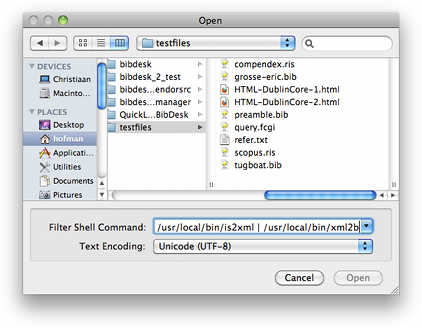

Opening a File Opening a File
Opening a File Opening a FileUse the "Open..." menu item in the "File" menu, and select the encoding you want to use from the popup menu at the bottom of the dialog box.
This feature lets you specify any command line that produces a BibTeX
file and open it in BibDesk directly. If you have command line
conversion tools from other formats, this is a handy way to use them.
For instance, suppose you have a file called `searchresults.isi' in the ISI file format from
an online database. Using the BibUtils
suite of command line utilities (available here), you can translate that file into BibTeX with the following
command: /usr/local/bin/isi2xml | /usr/local/bin/xml2bib, with the paths adjusted appropriately for your
installation.

The drop-down menu will save the last seven commands used, which should be sufficient for most needs! Note that BibDesk can open RIS files directly, so a filter isn't required for them.